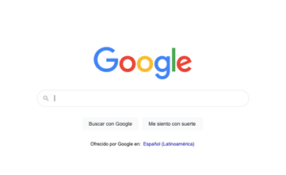

En este recurso podrán comprender la naturaleza del contenido media, qué ha pasado, dónde estamos y cómo debemos ir al lado de los avances de la comunicación multimedia.
Un ecosistema está formado por organismos (entidades) interdependientes (relacionados) que comparten un mismo medio físico (entorno), (Christopherson, 1994). En cada ecosistema se establece siempre una clase de equilibrio dinámico que explica los diferentes tipos de relaciones que tienen las diversas entidades de un sistema dentro de un entorno determinado. Cualquier alteración en el equilibrio del sistema se produce por algún cambio en la entidad o en las relaciones que se mantienen en un espacio y tiempo específico. La ecología es una rama de la biología que estudia precisamente las interrelaciones entre los diferentes organismos de un sistema y su entorno.
A principios de los 70’s, Neil Postman Catedrático de la Universidad de Nueva York promovió el concepto “Media Ecology” o Ecología de los Medios que tomó del polémico Marshall McLuhan para explicar a través de una analogía con esta área de la biología (ecología) como, en este caso, todos los medios o tecnologías de comunicación (entidades) también afectan la percepción, la comprensión, los sentimientos y los valores de las personas (relaciones); y como además esta interacción con las tecnologías aumentan o reducen nuestras posibilidades de sobrevivencia en un espacio y tiempo determinado (entorno). (Postman, 1970) Esta metadisciplina como la llamó una de sus discípulas Christine Nystrom (1973) dio origen a un posgrado en la misma Universidad de Nueva York que formó parte de la oferta curricular de la institución durante más de 30 años.
Para Postman (1970), la palabra ecología implica estudio de los ambientes mediáticos o tecnológicos (libros, fotografía, cine, radio, televisión, computadoras...); específicamente de su forma, estructura, contenido e impacto social. En estos (ambientes), se presenta un sistema dinámico y complejo de mensajes que condiciona en las personas la forma de pensamiento, sentimiento, y actuación. Por una parte, estructura lo que se puede ver y decir, establece roles, y específica lo que se permite y no se permite realizar. En el caso de los ambientes tecnológicos las especificaciones son cada vez más implícitas e informales, y lo que busca esta metadisciplina (Ecología de Medios) es justamente volver explícitas estas condiciones. La Ecología de Medios promueve el estudio de los ambientes mediáticos, y explora las consecuencias culturales de la transformación tecnológica en el tiempo, es decir cómo cambian y nos cambian continuamente los medios, herramientas, instrumentos, artefactos o tecnologías que se encuentran a nuestra disposición. "We shape our tools and thereafter our tools shape us” Traducción: Formamos nuestras herramientas y luego éstas nos reforman (McLuhan, 1964, Traducción Propia).
En el tercer lustro de este siglo XXI aparece una nueva configuración tecnológica dominada por herramientas o instrumentos digitales que impactan drásticamente y de una forma muy particular, los hábitos y percepciones de la sociedad. En este sentido se puede decir que ahora las nuevas tecnologías digitales atentan contra el equilibrio que se había establecido dentro del ecosistema social. El dominio que tenía una tecnología en particular, en términos de atracción y participación de mercado, se ve limitado por la liberación de una nueva oferta que divide la atención de los usuarios de los instrumentos convencionales.
Los medios de comunicación compiten cada vez de forma más intensa por la atención de las personas (Levinson, 2004, p. 12). En términos darwinianos la selección del ambiente mediático queda en manos de las personas, quienes contribuyen con su preferencia en la evolución de un medio determinado. Constantemente se decide entre ir al cine o quedarse en casa a ver televisión, leer un libro o ver un video, hablar por celular o enviar un correo electrónico. Los medios no evolucionan por una selección natural sino por una selección humana. El medio que mejor evoluciona es aquel que se ajusta más a las diversas necesidades del hombre.
Al respecto, señala Alejandro Piscitelli en su libro Internet: la imprenta del siglo XXI:
“Los cambios en la tecnología de la comunicación crean efectos sociales, culturales, técnicos y cognitivos potenciales, cuyo nivel de efectividad depende de la naturaleza, alcance y nivel de implementación de la tecnología. Para empezar, ninguna tecnología de la comunicación borra o elimina las tecnologías anteriores, pero puede alterar la cantidad de uso de los canales previos y el poder de dominación” (Piscitelli, 2005, p. 142)
Las nuevas tecnologías en cierto estado de equilibrio pueden ser limitadas por diferentes circunstancias que conforman este nuevo ecosistema digital también extienden y amplifican funciones y capacidades de las personas, tal y como lo hicieron los medios convencionales del siglo pasado. Por tal razón, las tecnologías siempre pueden ser entendidas como potenciadoras de acción, porque extienden capacidades que están limitadas por diferentes circunstancias y amplifican funciones para imponer un nuevo estado de equilibrio (Reynolds, 2007).
Marshall McLuhan (1964) afirmaba el siglo pasado que el libro era una extensión de la vista; la radio una extensión del oído; el teléfono una extensión del oído y la voz; y la televisión era una extensión del sentido del tacto. Para McLuhan todos los medios eran extensiones o amplificaciones de algún sentido, capacidad o función del cuerpo humano. Lo anterior se puede constatar también en el libro que trabajaron él y su hijo Eric, titulado Laws of Media: The New Science (McLuhan y McLuhan, 1988). Cuando una tecnología, medio, instrumento o artefacto irrumpe exitosamente en una sociedad, la redefine drásticamente. Así como el diseño de la televisión y la radio contribuyeron a la modificación de percepciones y hábitos de las personas que entraron en contacto con estos medios en el siglo pasado, ahora las nuevas tecnologías de comunicación digitales están nuevamente reconfigurando las visiones y acciones sociales de esta nueva era.
Las primeras computadoras permitieron un nivel de procesamiento de información y cálculo que superaba con creces la capacidad instalada en las personas, y entonces el poder de la mente comenzó a amplificarse, tal y como asegura Howard Rheingold (2013) en su obra Mind Amplifier: Can Our Digital Tools Make Us Smarter?
Esta obra probablemente es una interesante respuesta a la tesis de Nicholas Carr que plasmó en su libro The Shallows: What the Internet is Doing to Our Brains (2010), que fue seleccionado como finalista del premio Pultizer en la categoría de “No ficción”. Para Carr la capacidad de concentración en una sola actividad es muy importante para ejercitar la memoria a largo plazo, para desarrollar el pensamiento crítico y conceptual, y para generar muchas formas de creatividad. Incluso lo emocional demanda tiempo para ser procesado, y si no se dedica tiempo suficiente para ello, la sociedad se deshumaniza cada vez más. Esto claramente se contrapone con la tesis de Rheingold. El problema es que la revolución digital ha instalado a las sociedades en un ideal muy utilitario, donde lo más importante es la eficiencia en el procesamiento de información. A medida que se cede el control, y se externaliza la resolución de problemas y otras tareas cognitivas a las máquinas, el potencial del cerebro se reduce de manera sutil pero significativa. Tal y como sucede cuando un deportista deja de entrenar, su desempeño y rendimiento comienza a caer de forma notable.
Sin embargo, para Rheingold (2013) la ampliación de la memoria, el razonamiento y la capacidad de comunicación ha permitido una mayor neuroplasticidad en las personas, una especie de reprogramación del cerebro para adaptarse con mayor facilidad al entorno y generar así una nueva forma de pensamiento. Para este autor, las computadoras personales que utiliza la gente en la actualidad son de hecho una exaptación de las primeras tecnologías digitales que se desarrollaron en plena Guerra Fría y que han beneficiado a sus usuarios.
“La computadora de uso personal es una exaptación cultural de las tecnologías que soñaron los visionarios y financiaron los guerreros desde los años 40, y fueron comercializadas en masa por los emprendedores desde los años 70. Una potencia de cálculo que ni siquiera el Departamento de Defensa de los Estados Unidos podía permitirse hace unas décadas y está ahora en las manos de billones de personas” (Rheingold, 2013, p. 14).
Los distintos dispositivos conectados a Internet son una extensión sumamente versátil de nuestros sentidos, nuestro conocimiento y nuestra memoria, que ejercen una importante función como amplificadores neuronales de gran alcance. Sin embargo, algunos sugieren que los efectos negativos de estas nuevas tecnologías digitales pueden ser igualmente fuertes (Carr, 2011). Por tal razón debe siempre realizarse una profunda evaluación de cualquier nueva tecnología, que detone cierta sensibilidad tanto hacia lo que se pierde como a lo que se gana, pues no se debe permitir que las promesas de la tecnología generen ceguera ante la posibilidad de limitación o reducción de una parte esencial de nuestro ser.
Hoy, los diversos dispositivos móviles especialmente los smartphones funcionan como potentes minicomputadoras conectadas entre sí. Estas nuevas tecnologías digitales permiten realizar el trabajo o estudio fuera de la oficina o la casa, entretienen y sirven para estar en contacto con miles de personas a través de redes sociales y otras aplicaciones de comunicación. Aparentemente no se puede vivir sin estas nuevas tecnologías digitales. Cuando una persona sale sin su smartphone siente pánico, algo que los estudiosos del tema han llamado “nomofobia” (no-mobilephone-, miedo a salir sin el teléfono). En poco más de 30 años, esta herramienta se ha convertido en una extensión muy valorada para las personas (Oliver, 2015).
Hay personas a quienes hablar de la web 2.0 les suena a pasado, más que a futuro. Las nuevas generaciones de la web serán la web 3.0 y la 4.0 y ya se está́ especulando sobre los avances que permitirán.
Sin embargo, es difícil encontrar una definición unívoca de la web 3.0. La idea general es que se trata de páginas capaces de comunicarse con otras páginas gracias al procesamiento del lenguaje natural y, aunque su concepción no es unitaria, aparece frecuentemente ligada a la web semántica.
Algunas definiciones que hemos rescatado son:
Aquellas plataformas o herramientas online que no sólo permiten la conversación e interacción entre sus usuarios, sino que además son capaces de actuar de forma proactiva.
Partiendo de la web 1.0 donde las personas se conectaban a internet a fin de informarse, transitamos por la web 2.0 donde las personas se conectan a otras personas con el objetivo de compartir y la evolución derivó en la web 3.0, donde las personas se conectan a aplicaciones que les permiten enriquecer las experiencias, adquirir autonomía y acceder a la construcción de la nueva web.
La evolución de la web en este nuevo estadio (acuñado como 3.0) pasaría por una web semántica, una web 3D y una web multimedia. Vayamos por partes.
La web semántica hace referencia a aquella que comprende lo que buscamos: los ordenadores por medio de técnicas de inteligencia artificial serían capaces de emular y mejorar la obtención de conocimiento hasta el momento reservada a las personas. Se trataría de dotar de una nueva estructura a las páginas web que aporte significado a nuestras búsquedas, y de ahí el nombre de web semántica.
Los primeros ejemplos de web 3.0 que podemos encontrar actualmente están orientados a nuevas funcionalidades en buscadores:
Buscador de la Web 3.0:

La web 3D se refiere al diseño tridimensional de las vistas virtuales de cualquier objeto a partir de tres lados distintos simultáneamente. Se usa en una amplia gama de servicios, como juegos, modelos de realidad virtual (VR) y soluciones multimedia. Permitiría la posibilidad de desplazarnos a través del navegador por un espacio tridimensional. Es una nueva tendencia que se enmarca en la web 3.04.
La web centrada en multimedia es la que ofrece no solamente búsquedas basadas en metadatos, sino similitudes en el ámbito multimedia (búsqueda de imágenes, videos...).
La web 3.0 aportará una nueva forma de utilizar la web, sacándola de los ordenadores y los móviles y llevándola a casi cualquier objeto cotidiano. Gracias a la web 3.05:
La web 4.0, término que se ha acuñado recientemente, constituye un concepto que se aplica a la integración de web D + web semántica + inteligencia artificial + voz para intercomunicación. También se la denomina web total o ubicua. Su objetivo es la convergencia de inteligencias –personas y cosas que se comuniquen entre sí para la toma de decisiones.
El objetivo primordial será el de unir las inteligencias, para que tanto las personas como las cosas se comuniquen entre sí para generar la toma de decisiones.
Sin duda, una de las palabras clave del contexto actual y uno de los términos comodín que se emplean sin la propiedad adecuada. Se habla de lo interactivo como sinónimo de digital, multimedia, etc., pero ni todo lo digital es interactivo, ni tampoco todo lo multimedia. La interactividad implica ofrecer al usuario ciertas opciones de control de los elementos multimedia, de tal forma que pueda explorar la estructura de la obra en la forma y momento que decida. Para Danvers (1994) es el término que describe la relación de comunicación entre un usuario / actor y un sistema (informático, vídeo u otro). Pero la interactividad no es sólo el diálogo con las máquinas, o entre personas mediadas por las máquinas, sino una forma de intervención en los procesos comunicativos para elaborar el producto, formar parte del contenido o potenciar su difusión.
La interactividad está ligada a la estructura no lineal de la narrativa, a la capacidad de intervención que se le otorgue al usuario en un producto dado hasta el grado establecido por el emisor, dentro de los límites del medio o aplicación. La interactividad estuvo relacionada desde los inicios con los videojuegos, con la web y con las aplicaciones que pue den ser más o menos interactivas según el poder de decisión que se le permita al usuario.
El impacto de la interactividad en las narrativas transforma la manera tradicional de contar (da igual si es en formato texto o video) que distinguía entre emisor y receptor para llevarnos a una nueva lógica de diálogo más o menos complejo entre ambos actores.
«El desafío que presenta la narración interactiva consiste en encontrar el equilibrio entre la necesidad de otorgar al usuario cierto grado de control sobre la historia para que resulte interactiva y, al mismo tiempo, mantener cierto grado de coherencia en la narración (básicamente: lógica interna del universo narrativo e identidad de los personajes), para que tenga algún sentido» (Orihuela, 1997: 41).
En los libros tradicionales se ha experimentado, por ejemplo, en las colecciones de escoger tu propia aventura9, en las que el lector derivaba a un capítulo o a otro en función de la decisión tomada. La célebre Rayuela de Cortázar (1963) serviría de ejemplo para hablar de interactividad en la narrativa clásica gracias al Tablero de dirección en el que se nos propone una lectura distinta, saltando y alternando capítulos.
9. Blog dedicado a esta serie de libros: http://librosetpa.blogspot.com.es/
Tabla: Contraposición entre la narrativa lineal e interactiva
LINEAL |
INTERACTIVA |
|
CONTENIDO |
Cerrado |
Abierto |
FORMA |
Estática |
Variable |
ACTO |
Narrador |
Usuario |
Fuente: Orihuela, 1997
En la narrativa hipertextual e hipermedia, las opciones de interactividad permiten llegar a un relato distinto, bien por medio del resultado de la colaboración de varios autores – hiperficción constructiva o, aunque tenga un único autor, a través de las elecciones del lector de sus trayectos de lectura según los nexos hipertextuales que activa (hiperficción explorativa). En el cine, ha sido poco explotada de forma exitosa, aunque pueden encontrarse algunos ejemplos como la cinta danesa Switching (2003)11, donde la interactividad forma parte de la película a través de una estructura circular.
Para la televisión tradicional, la interactividad se reducía a las llamadas por teléfono o a las cartas enviadas por los telespectadores. Hoy, el nuevo modelo de televisión plantea la convergencia de la televisión con internet, con lo que se ponen en marcha nuevos modelos comunicativos en los cuales el usuario tiene múltiples opciones de interacción: gracias a la selección de contenidos a la carta, gracias a la interacción en redes sociales, y gracias a la creación de una comunidad de usuarios (que también pueden interactuar entre sí). La televisión nunca ha presentado una comunicación tan multidireccional ni tan interactiva como la que presenta derivada de su confluencia con la red.
El futuro del consumo audiovisual apunta hacia los contenidos y la interactividad implementados en diversas plataformas de acceso (Muñoz y Alonso, 2011: 97).
En los videojuegos, la interactividad es uno de los elementos fundamentales. Poco a poco los juegos han experimentado una evolución en paralelo:
Además, la interactividad en el ámbito de los videojuegos tiende a ser una interactividad social, en la medida en que se potencian cada vez más los juegos multiplayer online.
Para las estrategias de comunicación multimedia, la interactividad es otra de las piedras angulares. Puesto que se busca la reacción e implicación del usuario, el nuevo producto no puede responder a las dinámicas unidireccionales de un anterior orden mediático, sino que debe ser bidireccional y multidireccional. Una vez descritas las principales características del contexto en el que nos hallamos, podemos entender mejor las herramientas y las posibilidades que han permitido el nacimiento y están ayudando a la consolidación de las estrategias de comunicación multimedia.
Les invito a que explore todos los recursos y herramientas disponibles en este tema, serán útiles para la compresión de la temática y la elaboración de las actividades evaluativas.
Bibliografía:
Gutiérrez, F. (2018). Sobre la nueva ecología de medios en la era digital: Hacia un nuevo inventario de efectos. Razón y Palabra, 22(1_100). Páginas: 239 -244
Costa, C. Piñeiro Otero, T. (2014). Estrategias de comunicación multimedia. Barcelona: Editorial UOC. Páginas: 13 -23.
Islas, O. (2009). La convergencia cultural a través de la ecología de medios. Comunicar, 17(33), 25-33.
Latorre, M. (2018). Historia de las web, 1.0, 2.0, 3.0 y 4.0. Universidad Marcelino Champagnat. Perú.
Costa, C. Piñeiro Otero, T. (2014). Estrategias de comunicación multimedia. Barcelona: Editorial UOC.
Romero-Rodríguez, L. M., & Rivera-Rogel, D. (2019). La comunicación en el escenario digital. Editorial Pearson.
Peña Fernández, S., Lazkano Arrillaga, I., & García González, D. (2016). La transición digital de los diarios europeos: nuevos productos y nuevas audiencias.
Tallarico, G. (2012). Las redes sociales en la comunicación estratégica de las instituciones.
Costa, C. Piñeiro Otero, T. (2014). Estrategias de comunicación multimedia. Barcelona: Editorial UOC.
Romero-Rodríguez, L. M., & Rivera-Rogel, D. (2019). La comunicación en el escenario digital. Editorial Pearson.
Romero-Rodríguez, L. M., & Rivera-Rogel, D. (2019). La comunicación en el escenario digital. Editorial Pearson.
Gutiérrez, F. (2018). Sobre la nueva ecología de medios en la era digital: Hacia un nuevo inventario de efectos. Razón y Palabra, 22(1_100), 237-254.
Universidad Nacional Autónoma de Honduras
Vicerrectoría Académica
Dirección del Sistema de Estudios de Posgrados
Dirección de Innovación Educativa
Entidad Desarrolladora del curso de “Comunicación Multimedia”
Dr. Armando Euceda
Director DSEP
Dra. Martha Leticia Quintanilla
Directora DIE
M.Sc. Alina Beatriz Donaire Sánchez
Expertos en contenidos
Lic. Nelsy Mariela Castro
Diseñador Instruccional
Aurora Valladares
Corrección de Estilo
Lic. Eduardo Elvir
Lic. Hugo Chinchilla
Producción Digital
Carlos José Pérez Sánchez
Programador Web